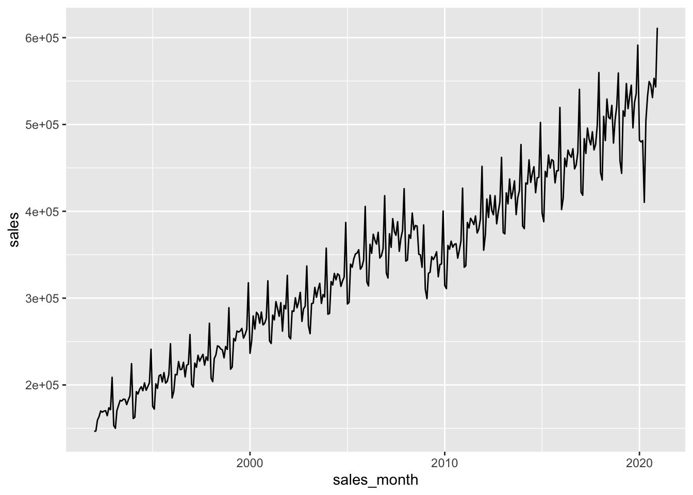

Chapter 3 of Tanimura (2021) is really two chapters. The first part of the chapter discusses some finer details of dates, date-times, and time stamps. This material is important, but a little technical and bewildering without some concrete use cases. This complexity is compounded by the use of DuckDB here and PostgreSQL in Tanimura (2021), as some details work a little differently from one backend to the other. Finally, while there are some interesting issues in using dbplyr with timestamp data, there probably need data and settings to fully comprehend. As such, I have put the code related to this part of Chapter 3 of Tanimura (2021) in Section 1, part of the appendix.
The second part of the chapter is where Tanimura (2021) really starts to take off. This is where it starts playing around with real data.
db <-dbConnect(duckdb::duckdb())retail_sales <-tbl(db, "read_csv_auto('data/us_retail_sales.csv')") |>compute(name ="retail_sales")
Now that we have the data in R, a few questions arise.
First, why would we move it to a database? Second, how can we move it to a database? Related to the previous question will be: which database to we want to move it to?
Taking these questions in turn, the first one is a good question. With retail_sales as a local data frame, we can run almost all the analyses below with only the slightest modifications. The modifications needed are to replace every instance of window_order() with arrange().1 The “almost all” relates to the moving average, which relies on window_frame() from dbplyr, which has no exact equivalent in dplyr.
So the first point is that “almost all” implies an advantage for using dbplyr. On occasion, the SQL engine provided by PostgreSQL will allow us to do some data manipulations more easily than we can in R. But of course, there are many cases when the opposite is true. That said, why not have both? Store data in a database and collect() as necessary to do things that R is better at?
Second, performance can be better using SQL. Compiling a version of this chapter using dplyr with a local data frame for the remainder took just under 14 seconds. Using a PostgreSQL backend, it took 8.5 seconds. Adding back in the queries with window_order() that I removed so that I could compile with dplyr and using DuckDB as the backend, the document took 8.3 seconds to compile (this beat out PostgreSQL doing the same in 9.6 seconds). While these differences are not practically very significant, they could be with more demanding tasks. Also, a database will not always beat R or Python for performance, but often will and having the option to use a database backend is a good thing.
Third, having the data in a database allows you to interrogate the data using SQL. If you are more familiar with SQL, or just know how to do a particular task in SQL, this can be beneficial.2
Fourth, I think there is merit in separating the tasks of acquiring and cleaning data from the task of analysing those data. Many data analysts have a work flow that entails ingesting and cleaning data for each analysis task. My experience is that it is often better to do the ingesting and cleaning once and then reuse the cleaned data in subsequent analyses. A common pattern involves reusing the same data in many analyses and it can be helpful to divide the tasks in a way that using an SQL database encourages. Also the skills in ingesting and cleaning data can be different from those for analysing those data, so sometimes it makes sense for one person to do one task, push the data to a database, and then have someone else do some or all of the analysis.
Regarding the second question, there are a few options. But for this chapter we will use duckdb
To install DuckDB, all we have to do is install.packages("duckdb").
Then we can create a connection as follows.
Here we use the default of an in-memory database. At the end of this chapter, we discuss how we could store the data in a file (say, legislators.duckdb) if we want persistent storage.
retail_sales |>filter(kind_of_business =='Retail and food services sales, total') |>select(sales_month, sales) |>ggplot(aes(x = sales_month, y = sales)) +geom_line()

SELECT date_part('year',sales_month) as sales_year,sum(sales) as salesFROM retail_salesWHERE kind_of_business ='Retail and food services sales, total'GROUPBY1;
SELECT date_part('year',sales_month) as sales_year, kind_of_business, sum(sales) as salesFROM retail_salesWHERE kind_of_business IN ('Book stores','Sporting goods stores','Hobby, toy, and game stores')GROUPBY1,2ORDERBY1;
Displaying records 1 - 10
sales_year
kind_of_business
sales
1992
Book stores
8327
1992
Sporting goods stores
15583
1992
Hobby, toy, and game stores
11251
1993
Book stores
9108
1993
Sporting goods stores
16791
1993
Hobby, toy, and game stores
11651
1994
Book stores
10107
1994
Sporting goods stores
18825
1994
Hobby, toy, and game stores
12850
1995
Book stores
11196
3.2.2 Comparing Components
retail_sales |>filter(kind_of_business %in%c('Book stores','Sporting goods stores','Hobby, toy, and game stores')) |>mutate(sales_year =year(sales_month)) |>group_by(sales_year, kind_of_business) |>summarize(sales =sum(sales, na.rm =TRUE), .groups ="drop") |>ggplot(aes(x = sales_year, y = sales, color = kind_of_business)) +geom_line() +theme(legend.position ="top")
<SQL>
SELECT
sales_year,
MAX(CASE WHEN (kind_of_business = 'mens') THEN sales END) AS mens_sales,
MAX(CASE WHEN (kind_of_business = 'womens') THEN sales END) AS womens_sales
FROM (
SELECT sales_year, kind_of_business, SUM(sales) AS sales
FROM (
SELECT
sales_month,
naics_code,
CASE WHEN (kind_of_business = 'Women''s clothing stores') THEN 'womens' WHEN NOT (kind_of_business = 'Women''s clothing stores') THEN 'mens' END AS kind_of_business,
reason_for_null,
sales,
EXTRACT(year FROM sales_month) AS sales_year
FROM retail_sales
WHERE (kind_of_business IN ('Men''s clothing stores', 'Women''s clothing stores'))
) q01
GROUP BY sales_year, kind_of_business
) q02
GROUP BY sales_year
<SQL>
SELECT *, (sales * 100.0) / total_sales AS pct_total_sales
FROM (
SELECT *, SUM(sales) OVER (PARTITION BY sales_month) AS total_sales
FROM retail_sales
WHERE (kind_of_business IN ('Men''s clothing stores', 'Women''s clothing stores'))
) q01
SELECT sales_month,avg(sales) over w AS moving_avg,count(sales) over w AS records_countFROM retail_salesWHERE kind_of_business ='Women''s clothing stores'WINDOW w AS (orderby sales_month rowsbetween11precedingandcurrentrow)
date_dim <-tibble(date =seq(as.Date('1993-01-01'), as.Date('2020-12-01'), by ="1 month")) |>copy_to(db, df = _, overwrite =TRUE, name ="date_dim")
WITH jan_jul AS (SELECT sales_month, salesFROM retail_sales WHERE kind_of_business ='Women''s clothing stores'AND date_part('month', sales_month) IN (1, 7))SELECT a.date, b.sales_month, b.salesFROM date_dim aINNERJOIN jan_jul b ON b.sales_month BETWEEN a.date-interval'11 months'AND a.dateWHERE a.dateBETWEEN'1993-01-01'AND'2020-12-01';
WITH sales_months AS (SELECTdistinct sales_monthFROM retail_salesWHERE sales_month between'1993-01-01'and'2020-12-01')SELECT a.sales_month, avg(b.sales) as moving_avgFROM sales_months aJOIN retail_sales b on b.sales_month between a.sales_month -interval'11 months'and a.sales_monthand b.kind_of_business ='Women''s clothing stores'GROUPBY1ORDERBY1LIMIT3;
SELECT sales_month, sales,sum(sales) OVER w AS sales_ytdFROM retail_salesWHERE kind_of_business ='Women''s clothing stores'WINDOW w AS (PARTITIONBY date_part('year', sales_month) ORDERBY sales_month)LIMIT3;
SELECT kind_of_business, sales_month, sales,lag(sales_month) OVER w AS prev_month,lag(sales) OVER w AS prev_month_salesFROM retail_salesWHERE kind_of_business ='Book stores'WINDOW w AS (PARTITIONBY kind_of_business ORDERBY sales_month)
With PostgreSQL, we would use to_char(sales_month,'Month'); with DuckDB, the equivalent is monthname(sales_month). To use an approach that works with either backend, we draw on arguments to the lubridate function month().
Having created a database connection, we can write the local data frame to the database using (say) copy_to().
We could specify temporary = FALSE if we wanted the data to be there permanently.3
3.5.1 Using PostgreSQL
3.5.2 Read-only databases
In some cases, you will have access to a database, but no write privileges for that database. In such a case, copy_inline() can be useful.4 Note that it seems you cannot interrogate a table created using copy_inline() using SQL, though it will behave in most respects just like a table created using copy_to() when using dbplyr. It is useful to note that copy_inline() is probably not a good solution if your data are hundreds of thousands of rows or more because the table is effectively turned into literal SQL.
I requested a tweak to dplyr that would have avoided the need to do this, but my request was denied. Given how awesome dbplyr/dplyr is, I cannot complain.↩︎
Though I will argue later that transitioning to dplyr/dbplyr is actually not difficult.↩︎
Obviously this would not make sense if db is a connection to an in-memory database.↩︎
I requested this function for a common use case I have. Thank you to the dbplyr team for making it happen.↩︎